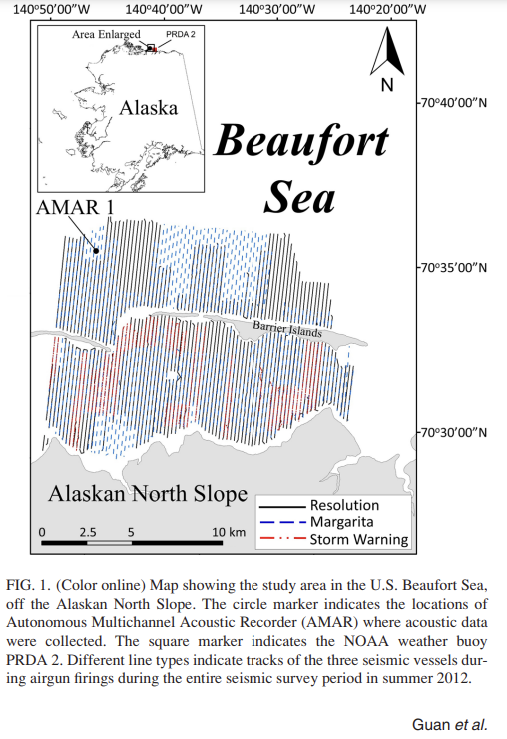

Published Maps
2022 Earth Science Week Toolkit
Primary cartographer for the American Geosciences Institute's (AGI) 2022 Earth Science Week Toolkit poster.
The poster is available on AGI's website.
Airgun inter-pulse noise field during a seismic survey in an Arctic ultra shallow marine environment (Guan, et al., 2015)
The article is available on Research Gate.